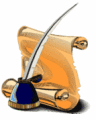
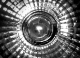
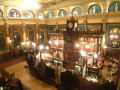
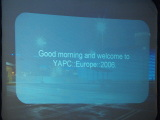
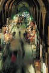
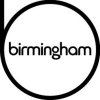
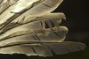

| "The Accessibility Of Perl"Jump to Content (Alt + C) | 30th August - 1st September 2006 | Home | News | Mailing List |

• Newsletters
• Wiki
• Call for Papers
• Schedule
• Talks
• Lightning Talks
• Statistics
• Organisers
• Sponsors
• Venue
• Accommodation
• Conference Map
• About Birmingham
• Travel
• Sights & Sites
• Birmingham
OpenGuide
• Birmingham
Perl Mongers

• TPF
• YEF
• YAPC
• Perl Mongers
YAPCs
• YAPC::Asia
• YAPC::Brasil
• YAPC::NA
• YAPC::Europe
• YAPC::Australia
Workshops
• YEF Worshops
• German
• Dutch
• Austrian
• Nordic
• Italian
")


| YAPC::Europe::2006 - Survey & Feedback Results | Posted by Barbie on 15/01/2007 |
|---|---|
|
On 2nd September 2006 it was all over. After three years worth of planning, emails, announcements and lots of late nights, it was all over and done. It was an experience none of the organisers will forget and we're glad to have been a part of the YAPC history. ... more | |
| Receipts | Posted by Barbie on 17/09/2006 |
|---|---|
|
If you wish to receive a receipt for your registration fee to the conference, but didn't get around to picking one up while you were there, please contact The Organisers with your Full Name, email address and company name (if applicable). Receipts will be issued as a web link, which you can then download and print for yourself. ... more | |
| The Last Newsletter Published | Posted by Barbie on 08/09/2006 |
|---|---|
|
 The 2006 YAPC::Europe conference is now over. It's been an absolute blast to have everyone join us in Birmingham, and help to make a very enjoyable and worthwhile event for everyone. Our last newsletter tidies up a few loose ends, and gives a promise of what is to come. Go check it out. ... more | |
| Conference Photos | Posted by Barbie on 08/09/2006 |
|---|---|
|
 Are you taking photos at the conference? If so, once you upload them, please add your link to the Conference Photos wiki page. ... more | |
| The Last Drink | Posted by Barbie on 02/09/2006 |
|---|---|
|
 Meet in The Old Joint Stock between 7-8pm. They serve food, but you might want to get there for about 6.30pm to be sure of getting served, as they usually stop serving food at about 8pm. Find St Philip's Cathedral in the centre of town, and the pub is opposite the main entrance. See The Conferences Map for directions. ... more | |
| The Online Plasma | Posted by Barbie on 31/08/2006 |
|---|---|
|
 For those wishing to see what's up next, rather than trying to find your booklets, why not have a look at our online plasma screen. ... more | |
| Lightning Talks | Posted by Barbie on 29/08/2006 |
|---|---|
|
Call for proposals extended to August 31, but the early acceptances are out. The latest schedule is now available. Have something to say that everyone at YAPC should hear? Want 5 minutes of fame? Then what are you waiting for? Sign up for a Lightning Talk today. ... more | |
| Plaggnet YAPC::EU | Posted by Barbie on 29/08/2006 |
|---|---|
|
Tatsuhiko Miyagawa has very kindly set up a Plaggernet for us. If your blog is in one of the usual haunts then it'll look for mentions of YAPC::Europe and add it to the list. If you just want to read it then point your browser at: http://yapceu.plagger.org/. We'll try and get this setup for http://plaggnet.birmingham2006.com/ too if we can. ... more | |
| Conference Directions | Posted by Barbie on 29/08/2006 |
|---|---|
|
So you're planning to attend the YAPC::Europe conference, you've booked your travel, your hotel and have registered. But how do you actually get here? Click for more information on how to get to Birmingham, your hotel and the conference venue. ... more | |
| Balti Night (aka The Conference Meal) | Posted by Barbie on 10/08/2006 |
|---|---|
 The Conference Meal will take place on Thursday evening (31st August). Second City Suite is a short 15 minute walk from the venue, so we will be arranging a walk from the Conference venue to Second City Suite for everyone. However, if you are staying at a Hotel not near the venue, or wish to make your own arrangements, we will be providing directions during the conference. ... more | |
| The Cathedral & The Bazaar | Posted by Barbie on 09/08/2006 |
|---|---|
|
 With The Cathedral being the organised conference, we also intend to hold a mini-expo, which will be The Bazaar, on the last day. The Bazaar will feature several Perl and Open Source projects, together with a few sponsor stands. LUGRadio already have plans to come along and record parts of the event for later broadcast, so be prepared to be accosted for your thoughts on Perl and Open Source development. ... more | |
| Our Sponsors | Posted by Barbie on 07/08/2006 |
|---|---|
|
 A big thank you to all our sponsors, as we greatly appreciate their support in helping to make the conference possible. Our latest sponsors are Google (speaker sponsor), Shopzilla (organiser's tshirt sponsor), Booking.com (refreshments sponsor), Belfast Perl Mongers (advice and help), UKFSN (broadband sponsor), AnServe (sponsor donation), Jon Allen (conference cd sponsor), Sendit.com (auction donations), O'Reilly Media (auction donations) & Manning (auction donations) , who have all made the organiser's lives less worrisome :) ... more | |
| Internet Access | Posted by Barbie on 10/07/2006 |
|---|---|
|
Following conversations with the venue and their network supplier, we are looking to install ADSL broadband access to the building and provide our own wireless network connectivity throughout. ... more | |
| Website Registration Opens | Posted by Barbie on 22/06/2006 |
|---|---|
 Call for Participation is a call to everyone to register their interest in attending the conference. Click the register button on the website, and enter your details. ... more | |
| Suggest Your BOFs | Posted by Barbie on 10/06/2006 |
|---|---|
|
 Birds Of a Feather (BOF) sessions provide informal forums for conference attendees to discuss topics of mutual interest. BOFs are open to all conference attendees, and whether you have a vague interest or expert knowledge, all participation is welcomed. BOF organisers themselves can be anyone who attends the conference, you don't have to be a speaker. BOFs can be organized for individual projects or broader topics (best practices, open data, standards, key signing). BOFs are entirely up to you. If you have an idea for a BOF please feel free to add it to the list. ... more | |
| Sponsorship and Support | Posted by Barbie on 26/01/2006 |
|---|---|
|
Sponsorship is a major source of funding of the conference. Without sponsors the conference would not happen. We have been very fortunate having several sponsors getting in touch and finding out how they can help. We will be unveiling some bigger sponsors soon, but in the meantime, we still need help with raising funds to cover our costs. If you or your company can help, please get in touch, or click more to read the complete article. ... more | |
| Welcome to the website! | Posted by Barbie on 01/01/2004 |
|---|---|
|
You may have heard that Birmingham Perl Mongers are planning to host the 7th annual YAPC::Europe Perl Conference. This site is the focal point for all our activities preparing the conference. ... more | |
| News Highlights | |
|---|---|
| Deadline for the Swag Bag | If you are planning to send us goodies for the swag bag (the conference pack), then please note that the deadline for delivery is Friday 18th August. ... more |
| Provisional Schedule | We have been blessed with a wealth of quality talks and over the last week we have been having a hard time trying to schedule everything and avoiding conflicts for speakers and themes. It's not been easy, but we think we have got a schedule we can let you see. So here it is.... ... more |
| Registration Fees | The registration fees have been announced. There will be two rates, a standard rate and an individual rate. The latter being for those that are funding their trip themselves and are on a limited budget. ... more |
| Website Registration Opens | Call for Participation is a call to everyone to register their interest in attending the conference. Click the register button on the website, and enter your details. ... more |
| The Lastest News ... | |
Platinum Sponsors


Gold Sponsors


Silver Sponsors


Media Sponsors